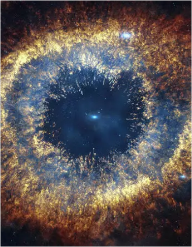
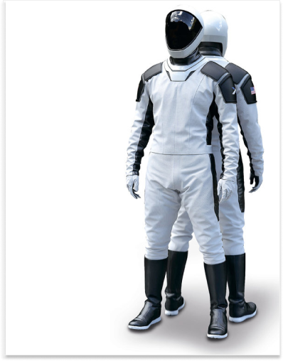
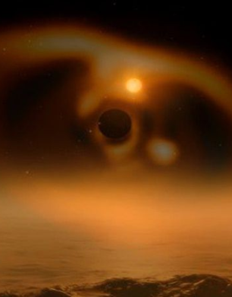
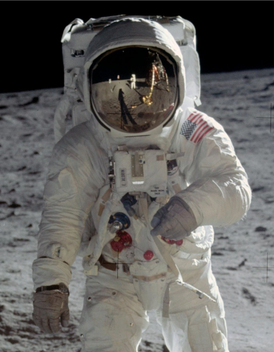
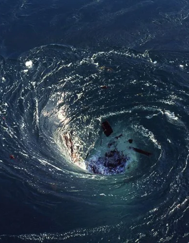

Популярные статьи

Это интересно
27.06.2020
Пять веков Вселенной: в каком мы живем и что это значит?

Это интересно
27.06.2020
Скафандр SpaceX был создан голливудским дизайнером

Исследования
27.06.2020
Астрономы впервые увидели рождение планеты рядом с молодой звездой

Это интересно
01.06.2020
Не только космические. Какие еще бывают скафандры

Исследования
27.06.2020
Астрономам удалось увидеть гибель другой звёздной системы

Технологии
27.06.2020
Что такое Южно-Атлантическая магнитная аномалия и почему это опасно для всех